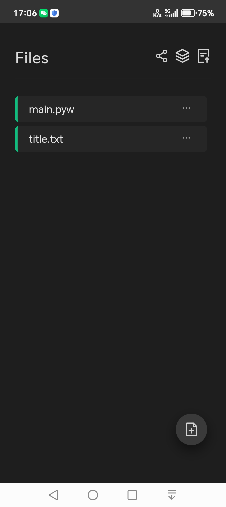
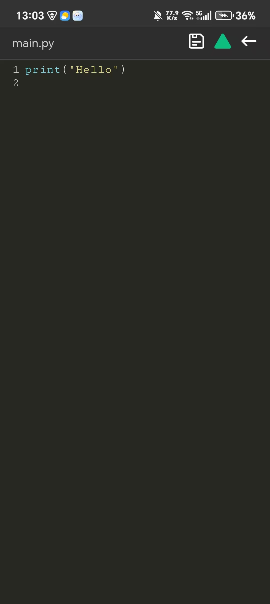
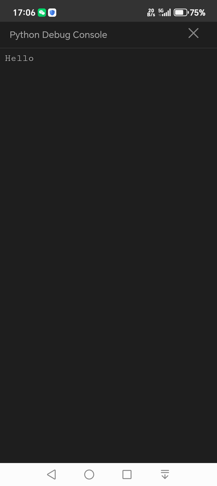
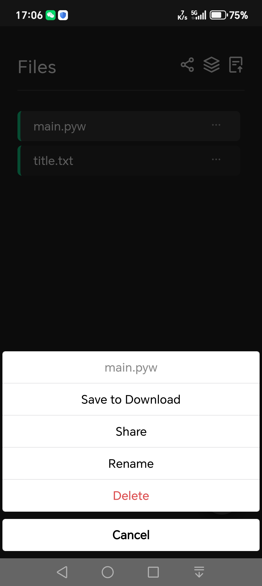
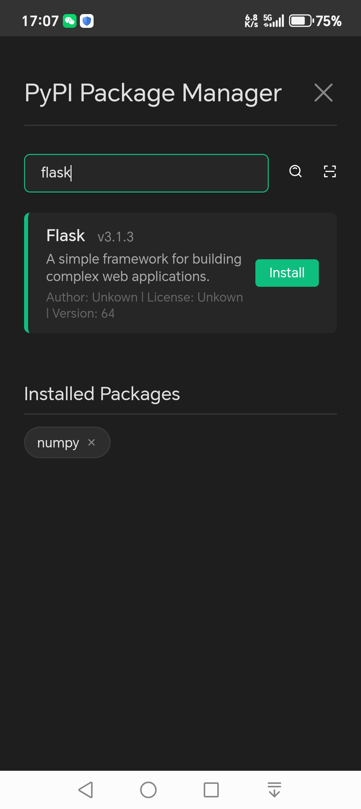

Built-in CPython 3.14 and PyPI repository, with pip support for installing dependencies. The code editor features built-in syntax highlighting and an integrated terminal for interactive use, enabling more focused development and learning on mobile.




